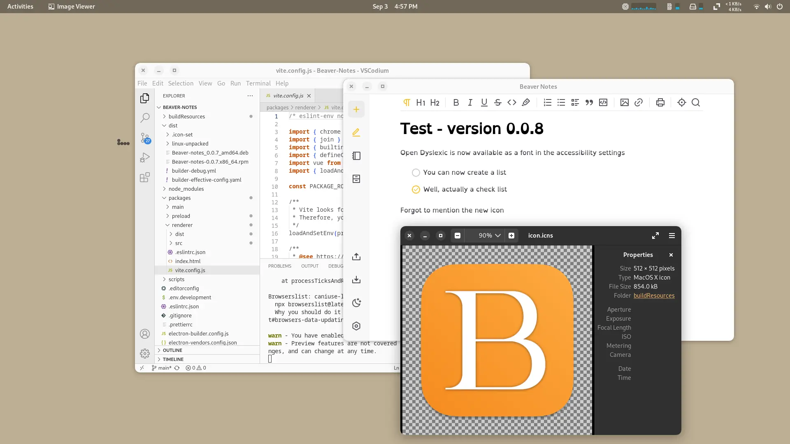
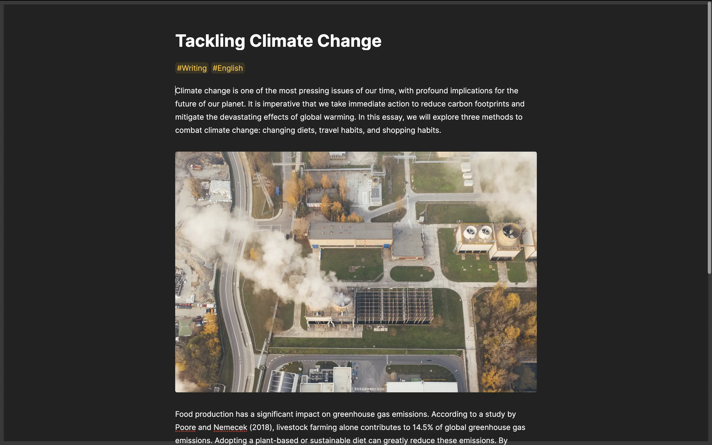

What's Boiling in Beaver's Cauldron
Daniele Rolli | September 7 2023
Hey folks, in this article we’ll dive into the creation process behind version 0.0.8 and what has been done up till now. So with no further delay let’s dive into the journey that is version 0.0.8
Making note taking accessible
I want to start this article with a little personal anecdote. When release 0.0.7 came out, my boyfriend decided to delve into the world of Linux, choosing Fedora as his operating system. What caught my attention was his choice to install the OpenDyslexic font. Until then, I had never truly appreciated how much impact a font could have on someone's life.
While I've always had an appreciation for fonts like Arimo, which I've used as the default in Beaver Notes, it wasn't until a few weeks ago that I truly understood their significance. My boyfriend, who had been using Beaver Notes, approached me and said, "It's wonderful, but it's not very useful to me."
I asked him for feedbacks on what could be improved, and it all came down to one thing: he has dyslexia and couldn't read the notes properly. So, we worked together to find a solution. After some testing and tweaking, Beaver Notes now supports the OpenDyslexic font. While this change may not seem much to those who don't face dyslexia daily, it could make a world of difference for those with dyslexia who rely on note-taking for studying, working, planning the day or even just for jotting down their thoughts down.
Check boxes, a long due feature
With version 0.0.7, the focus mode was redesigned based on feedback regarding its intuitiveness. However, the introduction of the orange border was found to be somewhat distracting to some users. Therefore, it has been replaced with a more subtle border that follows the app's theme. In the white mode, it will have a shade of gray, while in dark mode, it will have a lighter shade of black.
Making some touch ups to focus mode
With version 0.0.7, the focus mode was redesigned based on feedback regarding its intuitiveness. However, the introduction of the orange border was found to be somewhat distracting to some users. Therefore, it has been replaced with a more subtle border that follows the app's theme. In the white mode, it will have a shade of gray, while in dark mode, it will have a lighter shade of black.
A new icon and a new Beaver
Beaver Notes now has a new icon, it’s not much different from the original however since Beaver Notes is becoming ever more popular, the icon had to be fixed a bit and first thing first the white border had to go, on top of that the icon color has been shifted to different shades of orange.
But that is not all, we have also introduced a new Beaver, our mascot you’ll be able to see him if you don’t have any notes on your pc yet. For those who want to meet him without deleting your precious notes, here is him:
That's it for this release. As always, you can find the release notes on GitHub. Don't forget to follow the project on Mastodon and join our Reddit community for insights into the project's development.